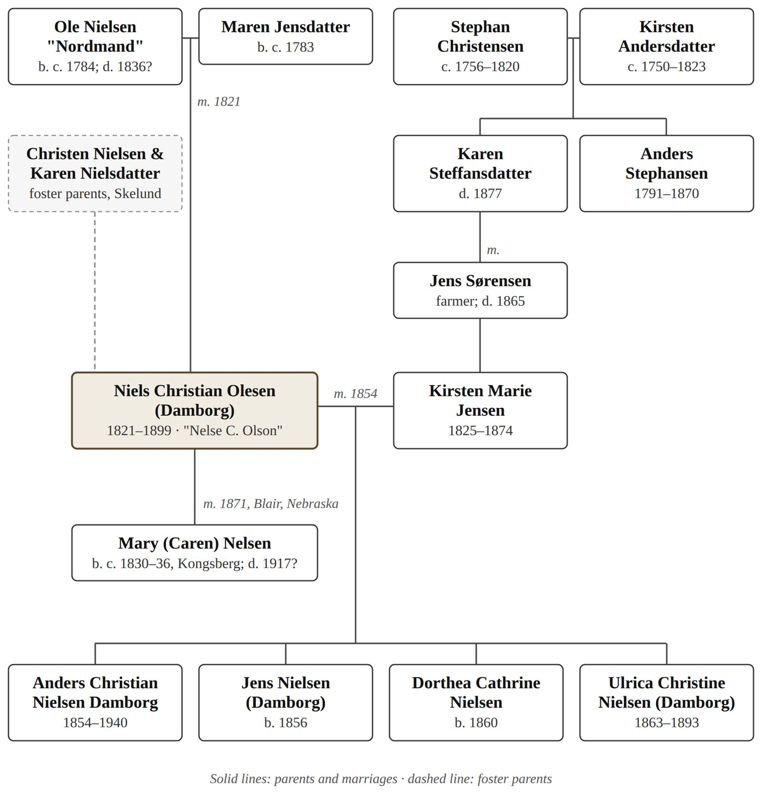

Introduction
Niels Christian Olesen was a North Jutland farm boy raised by foster parents. He served as a dragoon in the First Schleswig War and married into a farming family at Terndrup. He was the first in the family to call himself Damborg. In 1866 he gave up his rights to his wife's family farm, his inheritance and his children, emigrated alone and died a Nebraska homesteader under the name Nelse C. Olson.1


Notes
Abbreviation: DFT = Damborg family tree, "20130316 Damborg", Ancestry.com Member Trees, GEDCOM export of 26 May 2026, including its facts, research notes and attached images. Short titles refer to the Works Cited.
- 1Summary of Chapters 1–7. The sources for each statement are given in the notes to those chapters. ↩